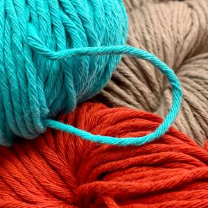
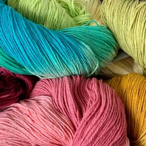

Nuestros hilados y nuestra confianza por tener muy buena mercadería esta enfocada
en la afamada marca L.H.O. Otranto, y en algunas oportunidades mechamos con algunos
hilados tanto de verano como de invierno importados de Barcelona, Turquía y Brasil.-

ALGODÓN A CREAR 8/27
ALGODÓN SUPER SUAVE DE 27 HEBRAS DE EXCELENTE CALIDAD Y LOS COLORES MAS LINDOS PARA DECORACIÓN.
CADA MADEJA PESA APROX. 150 GRAMOS.
RECOMENDABLE PARA TEJER CON TRICOT Y CROCHET 10-12
DECO:TECNICA DE MACRAME, MANTAS, PIE DE CAMA, BOLSOS, PLATOS DE SITIO, ALFOMBRAS, CESTOS.

ALGODÓN RENATA GRUESO 8/12
PURO ALGODÓN GRUESO DE 12 CABOS, DE EXCELENTE CALIDAD.
CADA MADEJA PESA APROX. 150 GRAMOS.
MIDE APROX. 165 METROS DE LARGO Y UN ANCHO DE 4 MM.
RECOMENDABLE PARA TEJER CON TRICOT Y CROCHET 5-6 Y SI TEJIERAS AMIGURUMIS GRANDES PODES USAR AGUJA 4-5
LA PALETA DE COLORES SELECCIONADA POR MOUSSA LANAS SON DE DISEÑO EXCLUSIVO, Y PARA AMIGURUMIS DIFERENTES COLORES PARA DISTINTOS TONOS DE PIEL.
IDEAL PARA SWEATER GRUESOS DE MEDIA ESTACION.

ALGODÓN JAZMÍN FINO ESFUMADO 8/3-MADEJAS DE 150 GRS
PURO ALGODÓN FINO 8/3, DE 3 HEBRAS ESFUMADO.
CADA MADEJA PESA APROX. 150 GRAMOS.
MIDE APROX. 670 METROS DE LARGO.
LA PALETA DE COLORES SELECCIONADA POR MOUSSA LANAS SON DE DISEÑO EXCLUSIVO, Y PARA AMIGURUMIS DIFERENTES COLORES PARA DISTINTOS TONOS DE PIEL.
RECOMENDABLE PARA TEJER CON TRICOT Y CROCHET 2,5-3,5 Y PARA AMIGURUMIS 2-3
IDEAL PARA PRENDAS DE VERANO FINAS, MEDIA ESTACIÓN, PUNTILLAS, PRENDAS DE BB.
ALGODÓN A CREAR 8/27
ALGODÓN SUPER SUAVE DE 27 HEBRAS DE EXCELENTE CALIDAD Y LOS COLORES MAS LINDOS PARA DECORACIÓN. CADA MADEJA PESA APROX. 150 GRAMOS. RECOMENDABLE PARA TEJER CON TRICOT Y CROCHET 10-12 DECO:TECNICA DE MACRAME, MANTAS, PIE DE CAMA, BOLSOS, PLATOS DE SITIO, ALFOMBRAS, CESTOS.
ALGODÓN RENATA GRUESO 8/12
PURO ALGODÓN GRUESO DE 12 CABOS, DE EXCELENTE CALIDAD. CADA MADEJA PESA APROX. 150 GRAMOS. MIDE APROX. 165 METROS DE LARGO Y UN ANCHO DE 4 MM. RECOMENDABLE PARA TEJER CON TRICOT Y CROCHET 5-6 Y SI TEJIERAS AMIGURUMIS GRANDES PODES USAR AGUJA 4-5 LA PALETA DE COLORES SELECCIONADA POR MOUSSA LANAS SON DE DISEÑO EXCLUSIVO, Y PARA AMIGURUMIS DIFERENTES COLORES PARA DISTINTOS TONOS DE PIEL. IDEAL PARA SWEATER GRUESOS DE MEDIA ESTACION.
ALGODÓN JAZMÍN FINO ESFUMADO 8/3-MADEJAS DE 150 GRS
PURO ALGODÓN FINO 8/3, DE 3 HEBRAS ESFUMADO. CADA MADEJA PESA APROX. 150 GRAMOS. MIDE APROX. 670 METROS DE LARGO. LA PALETA DE COLORES SELECCIONADA POR MOUSSA LANAS SON DE DISEÑO EXCLUSIVO, Y PARA AMIGURUMIS DIFERENTES COLORES PARA DISTINTOS TONOS DE PIEL. RECOMENDABLE PARA TEJER CON TRICOT Y CROCHET 2,5-3,5 Y PARA AMIGURUMIS 2-3 IDEAL PARA PRENDAS DE VERANO FINAS, MEDIA ESTACIÓN, PUNTILLAS, PRENDAS DE BB.